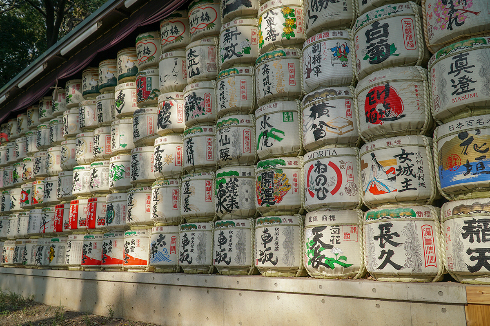

Introduction
Trip Of A Lifetime
My husband and I recently returned from a amazing trip to Japan. We went with another couple and were gone for 12 days. We had been planning the trip for 6 months and had been looking forward to going to Japan. I've always wanted to go to the country for as long as I could remember, especially since sushi is my favorite type of food. It was a trip of a lifetime and I feel so blessed that I had the opportunity to go. I had some amazing food, interacted with friendly locals, and were able to see some breathtaking views. My husband and I hope to go back one day as there is still so much more to do in Japan. A few of the highlights from the trip are listed below.
Tokyo

City Life
If you like city living, then you will like Tokyo. There are so many skyscrapers, bright lights, and there's always something going on in the city. We got around by taking the trains, which are pretty easy to navigate once you figure out where your going. The trains always arrive right on time so timeliness is very important. There are also a lot of people that take them, especially during peak hours, so you should be mindful of that when planning to go somewhere in case you have to take another train.
We started off by checking out 3 local popular ramen shops, where our local guide took us. We signed up for AirBnB experiences, which is where you pick activities you would enjoy having a local guide to take you around. All 3 ramen restaurants were amazing and they each offered a different style of ramen. Ramen will never taste the same for me.
We went to Tsukiji Fish Market the next day, which is a popular local fish market that offers fresh and processed seafood. We were able to try some local foods too through street vendors. The vendors had everything from Japanese egg omelette to fried fish balls. Everything was very tasty.
The next stop was Tokyo Tower, which is Japan's second tallest structure. It is a communications and observation tower. We were able to go to the mid level deck to observe Tokyo from above. It was a sight to see for sure.
Afterwards, we went to Shibuya Crossing, which is rumoured to be the busiest intersection in the world. You can see people crossing from all directions once the traffic signals changes. There are a lot of advertising signs and lots of stores to shop at in the area as well.
The next stop after Shibuya Crossing was Yoyogi Park. It's one of Tokyo's largest city parks and known to be busy during the spring time due to blooming of cherry blossoms. We were able to see the full bloom of the cherry blossoms and it was absolutely gorgeous. The weather was perfect and sunny. There were a lot of people enjoying the weather and having picnics in the park. The park leads you right to Meiji Jingu shrine so that was our next stop.
The Meiji Jingu shrine is dedicated to the divine souls of Emperor Meiji and his wife, Empress Shoken. The shrine is Tokyo's largest and most famous Shinto shrine. It is located in a forest and there is a beautiful main gate that you can't miss to head into the place. The architecture is so pretty and it is very peaceful there.
Kyoto
Traditional Side of Japan
Kyoto reflects the traditional culture side of Japan. It is the former capital city of Japan and is known for its culture, dining, and charm of rural Japan. The area offers beautiful views of cherry blossoms as well. We were able to visit the Kiyomizu-dera Temple, Fushimi Inari Taisha Shrine, and the Arashiyama Bamboo Grove.
The Kiyomizu-dera Temple is a Buddhist temple in eastern Kyoto. The main hall of Kiyomizu is built out on a veranda onto pillars, a structure constructed without nails. The veranda is the most well known aspect of the temple and we were able to enjoy a gorgeous view of Kyoto city from there. After taking in the view, we went to the Otowa waterfall since it is on the back side of the temple. The water is said to have healing properties and here worshippers offer prayers to Fudo-Myo-o, who is believed to punish evil-doers. Long-handled cups are provided to drink the water.
Fushimi Inari Taisha Shrine was one of my favorite spot to visit during our trip. It is an important Shinto shrine in southern Kyoto and is famous for its thousands of orange torii gates. It was such a beautiful sight to see. The trails lead into the wooded forest of the sacred Mount Inari. Fushimi Inari Taisha Shrine is dedicated to Inari, the Shinto god of rice. We saw many fox statues throughout the shrine because foxes are thought to be Inari's messengers. We did not hike the entire trail as we were short on time, but we were able to still see some gorgeous views of the city from various points on the trail.
Arashiyama Bamboo Grove is in the northwestern area of Kyoto. The area is known for its bamboo grove and beautiful scenery. We enjoyed walking along the path and taking in the pretty views of the bamboo grove. You can also enjoy the views of the bamboo grove by taking a rickshaw. It was amazing to see this place in person and to see how tall the bamboo trees were. In Japan, bamboo trees are a symbol of strength and believed to keep evil spirits at bay.